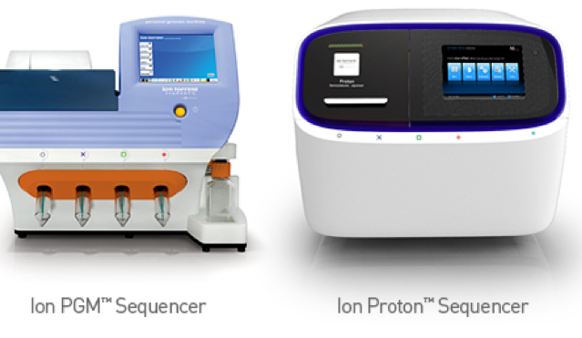

Whole Exome Sequencing for Clinical Diagnostics
School of Medical Sciences, Institute of Health and Biomedical Innovation, Queensland University of Technology, Brisbane, Australia
6th December 2016
Norfolk Island
https://github.com/gringer/bioinfscripts/blob/master/perlshaper.pl

~6000 member pedigree
Macgregor S et al.,: Legacy of mutiny on the Bounty: founder effect and admixture on Norfolk Island. Eur J Hum Genet. 2010; 18: 67–72.
Mitochondrial Ancestry

40% of current population haplogroup B4a1a[...]
Benton MC et al.,: “Mutiny on the Bounty”: the genetic history of Norfolk Island reveals extreme gender-biased admixture. Investigative Genetics 2015, 6:11.
Diagnostics: Whole Exome Sequencing
Ion Proton
- 2 Human Exomes
- 60-80M filtered reads
- up to 200bp reads
- 2-4 hours run
© 2016 Thermo Fisher Scientific Inc.
After QC, alignment and variant calling get between 28-42K variants per exome
Diagnostics used to take ~4 weeks from generating the data to filtering down the variants and writing a report for the clinician
We needed to make this process faster...
Custom pipeline...
- Sequencing, QC and alignment
- annotation (VEP, SnpSift, dbNSFP, dbSNP)
- variant filtering (bash and R)
- report generation (RMarkdown)